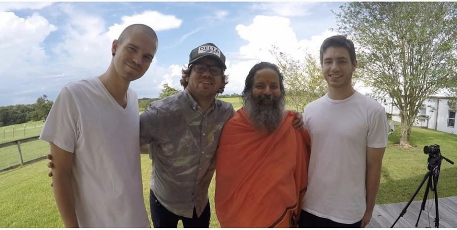

Bob as a guest
Shows Bob has joined to talk about original sin, the mystics, and what Jesus was pointing at. Both playlists stay current as new episodes come out.
 Third Eye Drops
Third Eye Drops Be Alive Podcast
Be Alive Podcast Aubrey Marcus Podcast
Aubrey Marcus Podcast Golden Frequency Podcast
Golden Frequency Podcast Xian Archive
Xian Archive The Inspired Artist Podcast
The Inspired Artist PodcastKarmic Relief
Bob's spiritual podcast: long conversations with teachers, seekers and friends about the mystics, practice, and staying awake inside an ordinary life. The first season ran as Be Where How?; the second is Karmic Relief. Both are still streaming.
Original Sin Is A Lie, read aloud
Bob reads the book on Spotify, free. The full audiobook is also on Audible, rated 5.0 by listeners.
“Listening to him narrate his own work brings that truth home in the most heartfelt way.”Missappear · Audible
Documentaries, free on YouTube
Ten years of filmmaking through Mind Heart Lens, on religion, practice and the people the news skips over.

The Kingdom Within (2015)
Pastors, swamis and yoga teachers in Austin, Texas, on where Christianity and yoga meet and where they part ways.
Short seriesPeace Is Boring (2016)
Five short documentaries with everyday Muslims, about the parts of their lives that never make the news.
FeatureSolidarity (2020)
A feature documentary about Palestine and Israel, told through five truths that are often not clearly understood in the Western world.